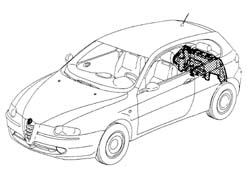
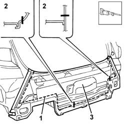
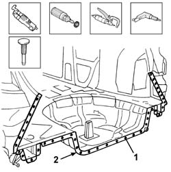
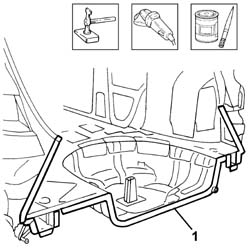
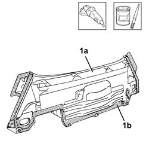
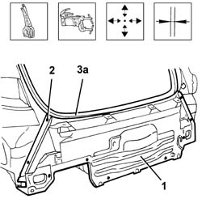
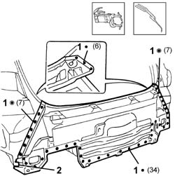
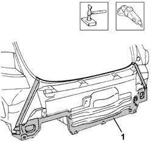
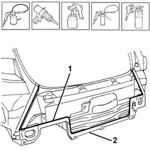

7210E70 R.R. REAR TRIM (structural element)
- Path
- Procedures > 72 PANELS AND FRAME > 7210 REMOVING REFITTING > 7210B structure elements-central and rear part > 7210E70 R.R. REAR TRIM (structural element)
- Kind
- repair procedure (removal / refitting; the operation number is the code)
- Applies to
- all engines; all production periods
- Interactive page
- https://sloeber94.github.io/elrnDB-a147/en/#/3025967
Applies to: all engines; all production periods
 Removing
Removing
 Refitting
RefittingCheck if any of the connected parts are deformed by checking body alignment dimensions. Use appropriate measurement tools (reference rigs, templates or gauges).
Straighten the body if necessary.

Applies to: all engines; all production periods
1. Use a pneumatic saw to follow the dotted cutting lines shown in the figure.
2. Cross-sections of key areas as a guide to allow the operator to adjust cutting position and depth in order to avoid damage to the underlying panels.
3. Remove the rear trim from the car.

Applies to: all engines; all production periods
Use a vibrating cutter with appropriate blade to remove P.V.C. from the cut end of the car rear trim.
Use a rotary brush to remove paint to gain access to the weld spots.
1. Use a chamfering machine to remove the weld spots shown in the figure.
Drill out any weld spots not accessible to the chamfering machine.
Use a chisel and hammer to remove spots ground previously.
2. Remove the cut edge of the trim from the car.

Applies to: all engines; all production periods
1. Straighten the edges using a mallet and profiled stake.
Use a grinding wheel to remove the weld spot residues.
Apply the electric weld paint finish.

Applies to: all engines; all production periods
1. Use a grinding wheel to remove the corrosion-proofing (1b) from around the edge of the part (1a).
Apply electrogalvanised paint to the edges in contact with the car.

Applies to: all engines; all production periods
Refitting
Removing1. Position the part correctly on the car and secure using self-locking grippers.
2. Tack the part by carrying out some spot welds.
Remove the self-locking clips.
3. Provisionally position rear bumpers, tail-gate sealing strip (3a) and tail-gate.
Check alignment and ensure the surrounding gap is even.

Applies to: all engines; all production periods
1. Use a spot welder to weld the areas shown in the figure.
2. Clench the tab indicated on both sides of the car.

Applies to: all engines; all production periods
1. Correct any deformations in the panel using a profiled stake and mallet.
Use a grinding wheel to clean and level the newly-welded areas.

Applies to: all engines; all production periods
Apply rust-proofing to newly welded areas.
1. Seal the joint lines.
Apply paint and wax.
2. Reapply the PVC treatment.
